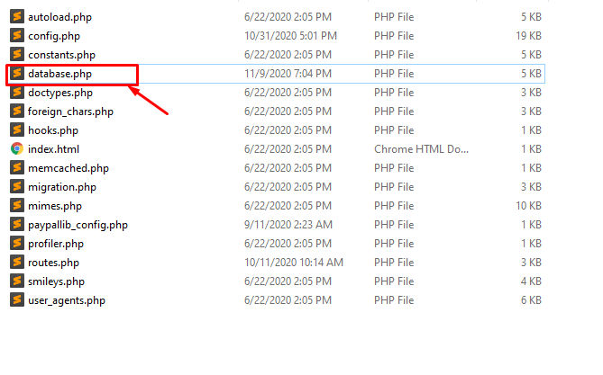
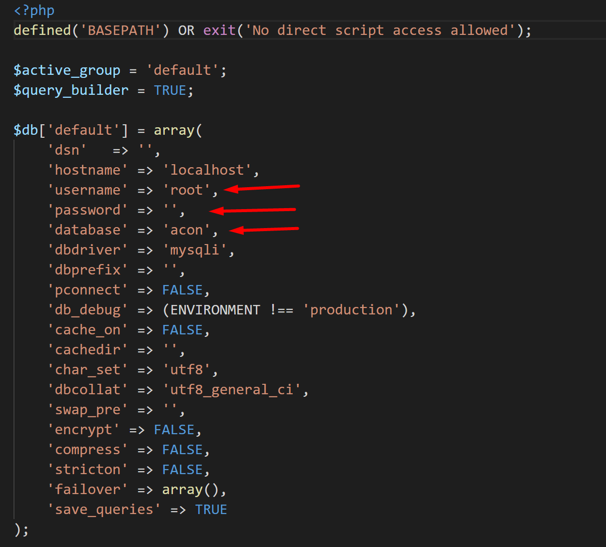
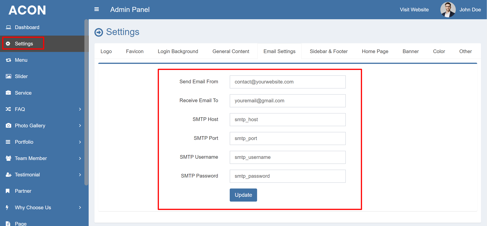
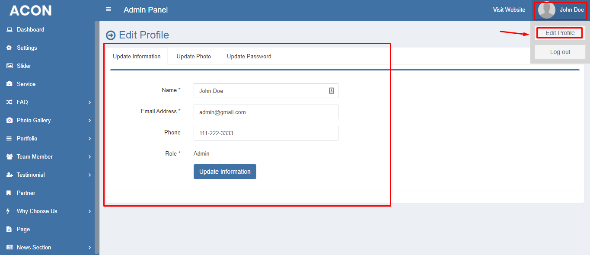

Acon is a responsive architecture, building and construction related Website Content Management System (CMS). This CMS is built completely with PHP and MySQL. It has a nice and attractive front end and back end interface that are really awesome and eyecatching. The back end has a lot of nice and maintainable features that are needed for a modern and professional website to handle the contents easily by client. Almost all kinds of changes are possible to do using the admin panel without having any kind or programming language knowledge.
This CMS is built using the Codeigniter PHP Framework. For this reason, it can be customized easily by other developers and they can understand the code flow easily. This CMS is strong against SQL injection, XSS & CSRF attack. Also in all pages, admin level security is implemented.
This CMS script has the following features:
Following modules must be activated on your server:
In order to install the CMS, please follow these steps:


In order to login to the admin panel, go to the url below:
http://www.yourwebsite.com/admin
Here "yourwebsite" is your main domain name. Just after your main url, you have to put "admin" and that's it.
Default Admin Login Credentials are:
Email: admin@gmail.com
Password: 1234
In order to run the script without problem, you have to set up the email (with SMTP) properly. So, from the admin panel, go to Settings > Email. Change the information given there according to your requirements.

In order to change the profile information like admin login email, admin login password and other information, go to top right corner. Click on the admin name like this photo and go to Change Profile Info section:

You will get all the details about an update in this section:
Overall Changes: - Made it compatible with php 8.2 - Fixed a minor bug in email sending using SMTP. - Added the menu item show/hide option Changed Files: - system\core\Controller.php - system\core\Loader.php - system\core\Router.php - system\core\URI.php - system\database\DB_driver.php - application\views\admin\view_login.php - application\views\admin\view_header.php - application\views\view_header.php - application\models\Model_common.php - application\controllers\Contact.php - application\controllers\admin\Forget_password.php - application\views\admin\view_setting.php Added Files: - application\controllers\admin\Menu.php - application\views\admin\view_menu.php - application\models\admin\Model_menu.php Added Table: - tbl_menu Removed Table Fields: - table:tbl_setting > field:smtp_active - table:tbl_setting > field:smtp_ssl
Overall Changes: - Made the script compatible for php 8+ - Fixed the script running issue for php 8+ Changed Files: - application/views/view_header.php - application/system/libraries/Session/drivers/Session_files_driver.php
Overall Changes: - Fixed the menu for mobile version - FAQ Section data showing bug removed - Mobile view bug for Why Choose Us section (home page) is fixed - Organized most of the controller codes Changed Files: - public/css/style.css - application/config/config.php - application/models/Model_faq.php - application/views/view_home.php - application/controllers/Contact.php - application/controllers/admin/Comment.php - application/controllers/admin/Designation.php - application/controllers/admin/Faq.php - application/controllers/admin/Forget_password.php - application/controllers/admin/Language.php - application/controllers/admin/News_category.php - application/controllers/admin/News.php - application/controllers/admin/Page.php - application/controllers/admin/Partner.php - application/controllers/admin/Photo.php - application/controllers/admin/Portfolio_category.php - application/controllers/admin/Portfolio.php - application/controllers/admin/Profile.php - application/controllers/admin/Service.php - application/controllers/admin/Setting.php - application/controllers/admin/Slider.php - application/controllers/admin/Social_media.php - application/controllers/admin/Team_member.php - application/controllers/admin/Testimonial.php - application/controllers/admin/Why_choose.php
Overall Changes: - Base_URL set up not needed anymore (changed config file). - Changed all the table collation as Unicode (UTF-8). - Added Preloader On/Off status option. - Added Tawk Live Chat option. - SMTP Option added in email setting. Changed Files: - applications > config > config.php - applications > config > routes.php - application > controllers > admin > Setting.php - application > controllers > admin > Forget_password.php - application > views > admin > view_setting.php - application > controllers > Contact.php - application > views > view_header.php - application > views > view_footer.php - public > css > style.css Added Rows to Table: tbl_settings: - Removed fields: "receive_email", "reset_password_email_subject" - Added fields: "preloader_status", "tawk_live_chat_code", "tawk_live_chat_status", "send_email_from", "receive_email_to", "smtp_active", "smtp_ssl", "smtp_host", "smtp_port", "smtp_username", "smtp_password"
1. Fixed the about page photo in front end. 2. Fixed the about page photo in back end. 3. Added new field in 'tbl_page' table into the database and its name is 'about_photo'
1. Added vision and mission fields in the database table. 2. Updated file: view_about.php (location: application > views > view_about.php) 3. Updated file: Page.php (location: application > controllers > admin > Page.php) 4. Updated file: view_page.php (location: application > views > admin > view_page.php)
1. Changed some minor bugs in controller name.
1. Updated the .htaccess file. 2. Updated the main config.php file.
Fixed: Portfolio and News single page button URL is fixed.
Initial Release
Visit this website and create ticket to get support: https://arefindev.com/support